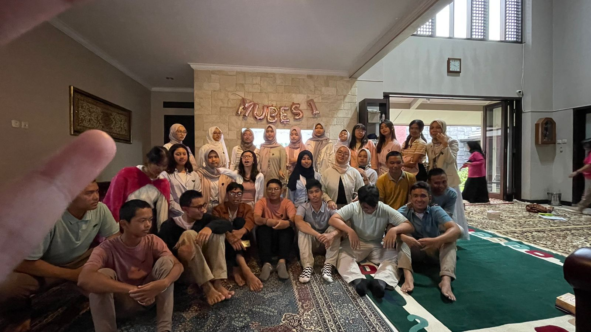
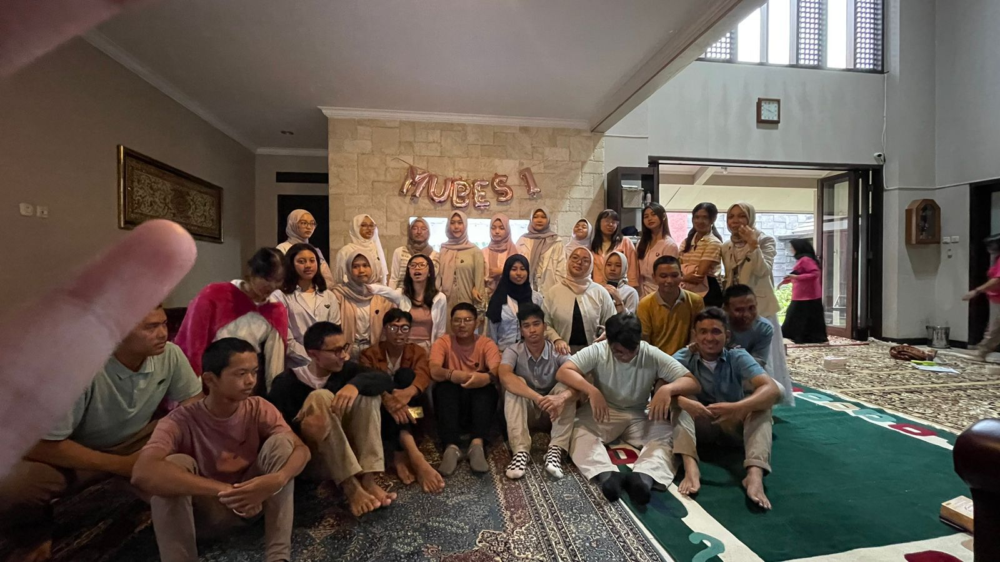
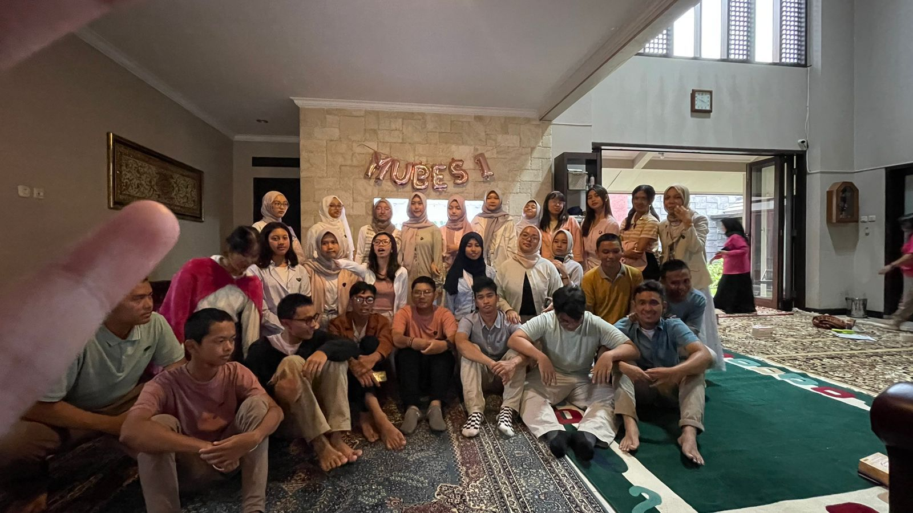
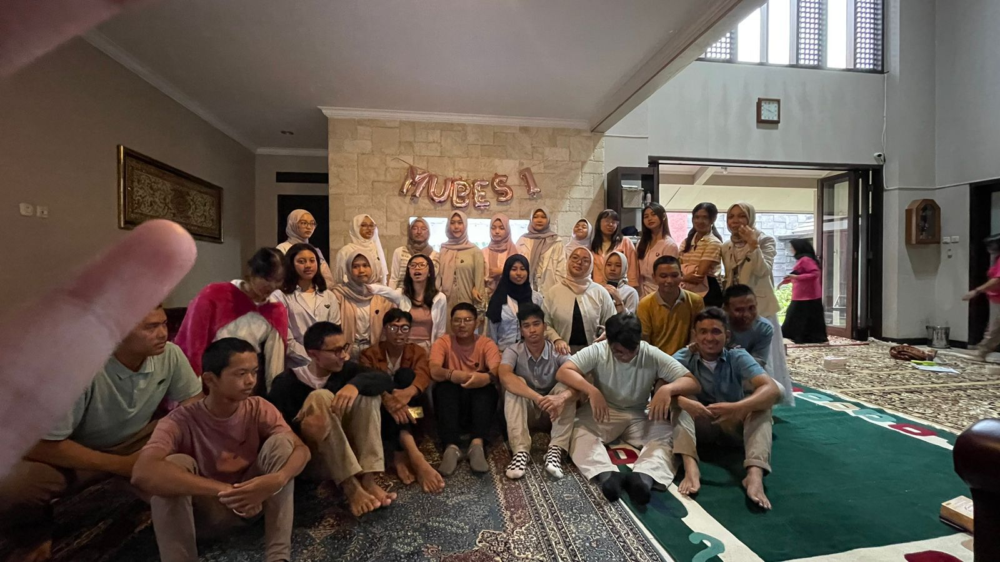

 

PK adalah satu-satunya organisasi legislatif di SMA Negeri 3 Bandung yang bersifat non-insidental.
PK memiliki motto yang berbunyi "Loyalitasku Untuk PK!" biasa
disebutkan sambil menyimpan tangan kanan yang digenggam di dada sebelah kiri.
Visi Perwakilan Kelas 70 adalah Menjadikan PK 70 sebagai jembatan bagi seluruh komponen sekolah dalam bidang
legislasi di lingkungan SMAN 3 Bandung.
Perwakilan Kelas memiliki 4 fungsi yaitu sebagai controller, evaluator, planner, dan aspirator.